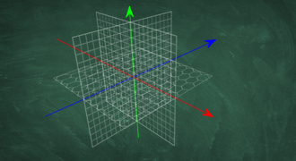
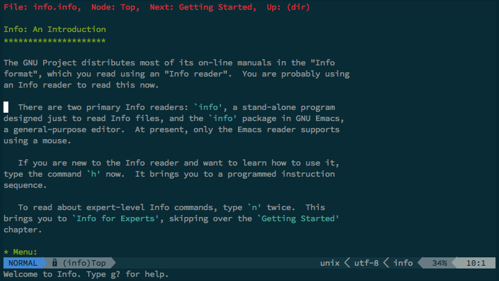
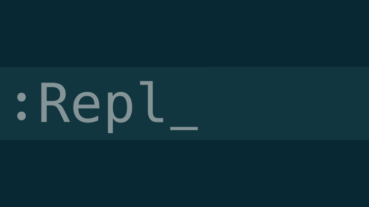
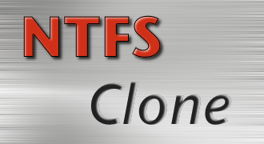
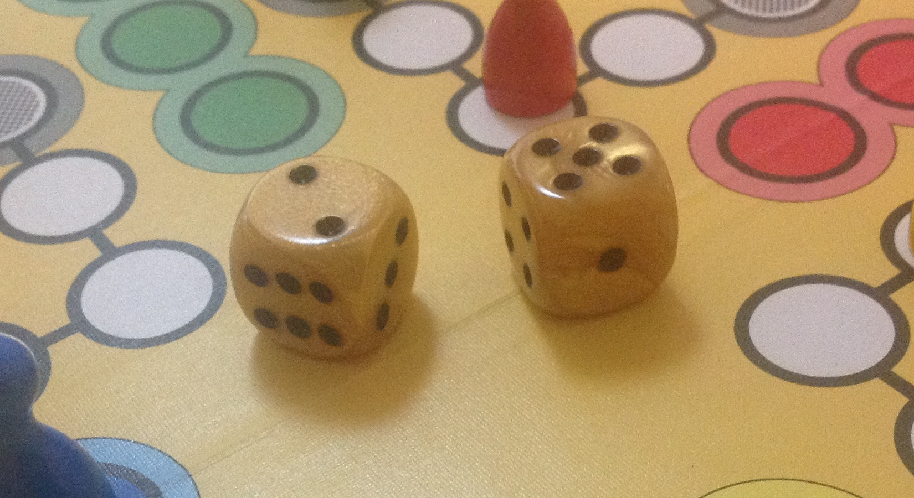
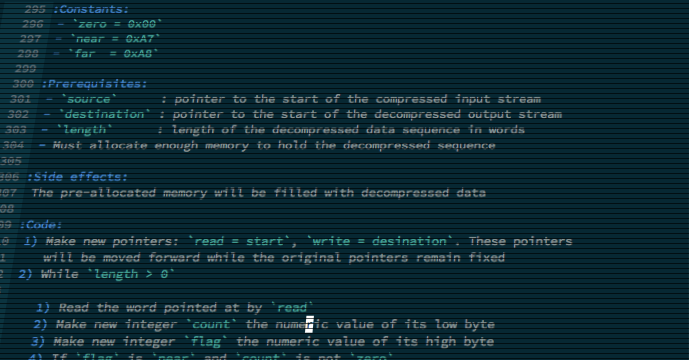

Products made at the workshop
Grid Framework
Grid-based game logic for Unity3D that is both simple and powerful. Custom classes wrap up all the math in a simple, flexible and powerful API for use as it fits your project. Includes also editor extensions and examples.
info.vim
A fully-featured reader and browser for info documents from inside Vim. Supports all the same navigation as standalone- and Emacs info, but with all the comfort of Vim.
Repl.nvim
Open and manage REPL instances right from inside Nvim, and send text to the REPL buffer. New types can be defined and existing defaults can be altered. An API provides functionality for 3rd party plugins as well.
NTFS-Clone
Create perfect 1:1 copies of NTFS hard drives. The resulting hard drive can be inserted right back into a PC and be booted from without having to run any additional steps.
Newton's method in C
One of my earlier projects written as an exercise for myself. It implements Newton's method of finding the root of a function in C using only the standard library. The program acts as a compiler and virtual machine for the function string entered and can interpret any legal function syntax.
<code>roll</code> - Roll dice on the command line
Generate random numbers from virtual dice. Useful for generating diceware passphrases and whatever else you might need random integer numbers for.
Game source documenation
We all love classic video games, and we also love when they get some modern polish. If it just wasn't for all the encrusted ancient code. This ongoing project aims to document the source codes of old games well enough that a port could be built from the specifications alone.
XeenTools
An ongoing effort to write a library that can read assets from the Might & Magic IV and V games. The idea is to write a library that can be used as a basis for a modern source port.